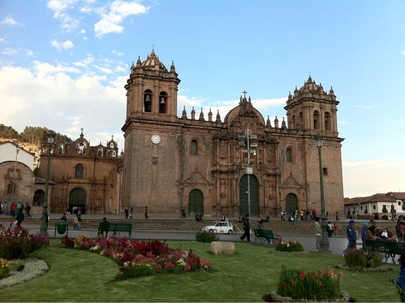

Fri, 08 Oct 2010 22:17:00 · Cusco · Peru · iglesia · travel · city · scene · photography
the cathedral and iglesia de jesús y maría located

The Cathedral and Iglesia de Jesús y María located on Cusco’s Plaza de Armas, Peru.
The construction of the plaza’s Renaissance style cathedral began in 1550 and took nearly a century to complete.
The cathedral, which boast one of the most notable interiors of any church in Peru, was built with blocks that once formed the palace of Inca Viracocha and Sacsayhuamán.
On the far left is the Iglesia de Jesús y Maria (1733) and to the right, Iglesia del Triunfo (1536), Cusco’s oldest church.